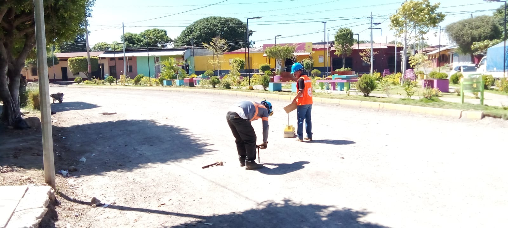

El control de calidad de los suelos mediante pruebas de compactación, utilizando métodos como el
cono de
arena y el densímetro nuclear, es esencial en la ingeniería civil y la construcción para evaluar la
capacidad de soporte y la densidad de los suelos. A continuación, se describen brevemente ambos
métodos:El control de calidad de los suelos lo realizamos mediante pruebas de compactación,
utilizando métodos como el cono de arena y el densímetro nuclear, estos procedimientos son
esenciales en la ingeniería civil y en la construcción para evaluar la capacidad de soporte y la
densidad de los suelos.
A continuación, se describen brevemente ambos métodos:
Se realiza con el propósito de evaluar la densidad máxima y la humedad óptima de un suelo compactado.
Procedimiento:Resultado: Se obtienen datos que permiten identificar la humedad óptima y la densidad máxima del suelo compactado.
Medir la densidad in situ de un suelo y proporcionar información sobre la calidad de la compactación.
Resultado: Se obtienen lecturas directas de la densidad del suelo sin necesidad de extraer muestras.
Estas pruebas son fundamentales para garantizar que el suelo tenga la densidad adecuada y cumpla con los requisitos de capacidad de soporte para proyectos de construcción. La información recopilada ayuda a ajustar el contenido de humedad durante la compactación para lograr la máxima densidad y eficiencia. El uso conjunto de estos métodos proporciona una evaluación integral de la calidad de la compactación del suelo.
